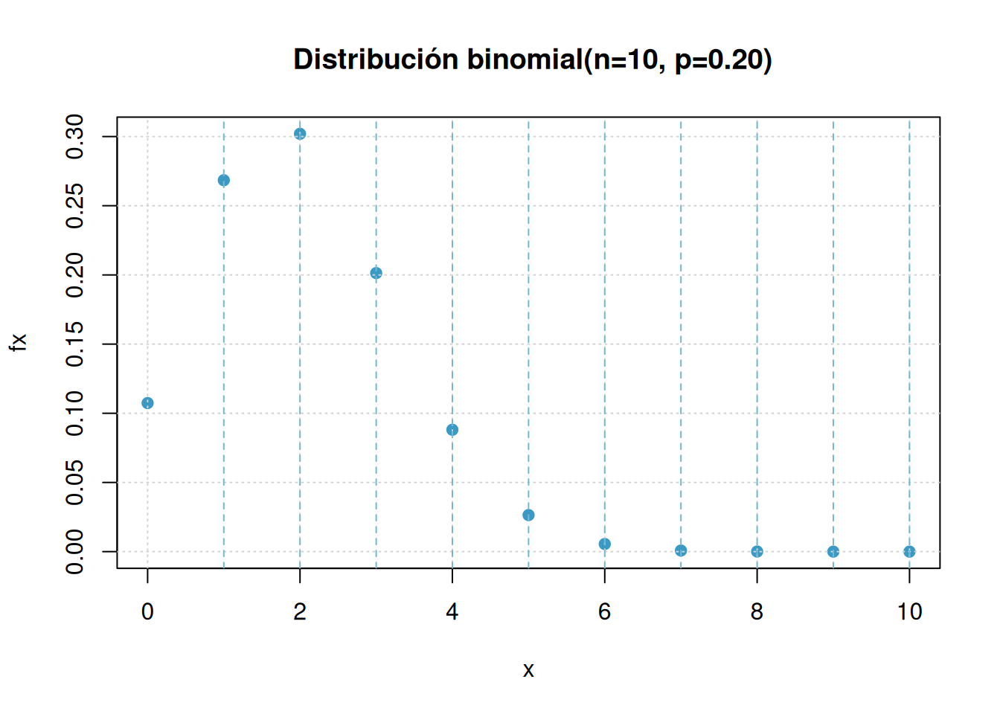

Estadística para la toma de decisiones
dgonzalez

Unidad 3.1
Problema 1.1
Clasifique las siguientes variables aleatorias como discretas o continuas:
- \(X\) : el número de accidentes automovilísticos que ocurren al año en una ciudad determinada
- \(Y\) : el tiempo que dura un partido de futbol - tiempo real de juego en minutos-
- \(M\) : la cantidad de leche que una vaca determinada produce anualmente
- \(N\) : el número de huevos que una gallina pone mensualmente
- \(P\) : el número de permisos para construcción que los funcionarios de una ciudad emiten cada mes
- \(Q\) : el peso del grano maiz producido por hectarea
- \(R\) : la edad de un estudiante que ingresa a la universidad
- \(S\) : el número de zapatos que tiene un adolescente
- \(T\) : el número de crias que tiene una tortuga
- \(U\) : el consumo mensual de energía de un hogar en Cali
- \(V\) : el número de hijos por hagar en Colombia
- \(W\) : el número de pasajeros de un bus de servicio publico MIO
- \(X\) : el gasto diario de un estudiante universitario de la Javeriana Cali
- \(Y\) : la cantidad de calorías que un adulto con actividad moderada gasta diariamente
- \(Z\) : la utilidad mensual de una microempresa
Problema 1.2
El tiempo que pasa, en horas, para que un radar detecte entre conductores sucesivos a los que exceden los límites de velocidad es una variable aleatoria continua con una función de distribución acumulada:
\[F_{_{X}}(x) = \left \{ \begin{matrix} 0 & \mbox{ , } x \leq 0\\ 1-exp\{-8x \} & x \geq 0 \end{matrix}\right. \]
Calcule la probabilidad de que el tiempo que pase para que el radar detecte entre conductores sucesivos a los que exceden los límites de velocidad sea menor a 12 minutos
- usando la función de distribución de probabilidad acumulada de \(X\)
- utilizando la función de densidad de probabilidad de \(X\)
- Represente las función \(f(x)\) gráficamente
# Cargar ggplot2
library(ggplot2)
# Definir la función F(x)
Fx <- function(x) {
ifelse(x <= 0, 0, 1 - exp(-8 * x))
}
# Crear un rango de valores para x
x_values <- seq(0, 1, length.out = 500)
# Calcular los valores de F(x)
Fx_values <- Fx(x_values)
# Crear un dataframe con los valores
data <- data.frame(x = x_values, Fx = Fx_values)
# Graficar usando ggplot2
ggplot(data, aes(x = x, y = Fx)) +
geom_line(color = c31, size = 1.2) +
labs(x = "x", y = "F(x)", title = expression(F[x](x))) +
theme_minimal() +
xlim(0, 1) +
ylim(0, 1) +
theme(
plot.title = element_text(hjust = 0.5, size = 16),
axis.title = element_text(size = 14),
axis.text = element_text(size = 12)
) +
geom_hline(yintercept = 0, linetype = "dashed") +
geom_vline(xintercept = 0, linetype = "dashed")Problema 1.3
Una variable aleatoria continua \(X\), que puede tomar valores entre \(x=2\) y \(x=5\), tiene una función de densidad data por:
\[ f_X(x)= \begin{cases} \dfrac{2(1+x)}{27}, & 2\leq x\leq 5, \\[6pt] 0, & \text{en otro caso}. \end{cases} \]
Calcule:
- \(P(X < 4)\)
- \(P(3 \leq X < 4)\)
- Represente la función \(f(x)\) gráficamente
Problema 1.4
Suponga que cierto tipo de pequeñas empresas de procesamiento de datos están tan especializadas que algunas tienen dificultades para obtener utilidades durante su primer año de operación. La función de densidad de probabilidad está dada por:
\[f_{_{Y}}(y) = \left \{ \begin{matrix} ky^4 (1-y)^3 & \mbox{ , } 0 \leq y \leq 1\\ 0 & \mbox{en otro caso } \end{matrix}\right. \]
- ¿Cuál es el valor de \(k\) que hace de la anterior una función de densidad de probabilidad válida?
- Calcule la probabilidad de que al menos 50% de las empresas tengan utilidades durante el primer año
- Calcule la probabilidad de que al menos el 80% de las empresas tengan utilidad durante el primer año
- Represente la función \(f(x)\) gráficamente
Problema1.5
En un grupo de 10 estudiantes que participan en un proyecto universitario, 5 pertenecen a Ingeniería Industrial, 2 a Finanzas y 3 a Administración de Empresas. Para conformar un equipo de trabajo se seleccionan aleatoriamente 4 estudiantes, sin reemplazo.
Sea \(X\) el número de estudiantes de Ingeniería Industrial seleccionados. Determine la función de probabilidad de \(X\) y explique sus resultados utilizando una fórmula apropiada.
Problema 1.6
En una cafetería universitaria hay 6 pedidos listos para entregar: 4 tienen un tiempo estimado de entrega de 10 minutos cada uno y 2 de 5 minutos cada uno. Un domiciliario selecciona aleatoriamente 3 pedidos, sin reemplazo, para realizar su siguiente recorrido.
Sea \(T\) la suma de los tiempos estimados de entrega de los tres pedidos seleccionados.
Determine la función de probabilidad de \(T\) y represente gráficamente la distribución obtenida.
Problema 1.7
Con base en las pruebas extensas, el fabricante de una lavadora determinó que el tiempo \(Y\) (en años) para que el electrodoméstico requiera una reparación mayor se obtiene mediante la siguiente función de densidad de probabilidad :
\[f_{_{Y}}(y) = \left \{ \begin{matrix} \dfrac{1}{4} exp\{-y/4\} & \mbox{ , } y \geq 0\\ 0 & \mbox{en otro caso } \end{matrix}\right. \]
Los críticos considerarían que la lavadora es una ganga si no hay una probabilidad de que requiera una reparación mayor antes del sexto año. ¿Se puede considerar la lavadora como una ganga?
¿Cuál es la probabilidad de que a lavadora requiera una reparación mayor durante el primer año?
Represente la función \(f(x)\) gráficamente
# Cargar ggplot2
library(ggplot2)
# Definir la función f_Y(y)
fy <- function(y) {
ifelse(y >= 0, (1 / 4) * exp(-y / 4), 0)
}
# Crear un rango de valores para y
y_values <- seq(0, 20, length.out = 500)
# Calcular los valores de f_Y(y)
fy_values <- fy(y_values)
# Crear un dataframe con los valores
data_fy <- data.frame(y = y_values, fy = fy_values)
# Graficar usando ggplot2
ggplot(data_fy, aes(x = y, y = fy)) +
geom_line(color = c32, size = 1.2) +
labs(x = "y", y = "f(y)", title = expression(f[Y](y))) +
theme_minimal() +
xlim(0, 20) +
ylim(0, 0.3) +
theme(
plot.title = element_text(hjust = 0.5, size = 16),
axis.title = element_text(size = 14),
axis.text = element_text(size = 12)
) +
geom_hline(yintercept = 0, linetype = "dashed") +
geom_vline(xintercept = 0, linetype = "dashed")Problema 1.8
Sea el número de llamadas telefónicas que recibe un conmutador durante un intervalo de 5 minutos una variable aleatoria \(X\) con la siguiente función de distribución de probabilidad:
\[ f_X(x)= \left\{ \begin{matrix} \dfrac{e^{-2}2^x}{x!}, & x=0,1,2,3,\ldots, \\[6pt] 0, & \text{en otro caso}. \end{matrix} \right. \]
- Determine la probabilidad de que \(X\) sea igual a \(0, 1, 2, 3, 4, 5\) y \(6\)
- Grafique la función de distribución de probabilidad para estos valores de \(X\)
- Determine la función de distribución acumulada para estos valores de \(X\).
- Represente la función \(f(x)\) gráficamente
Problema 1.9
El congestionamiento de pasajeros es un problema de servicio en los aeropuertos, en los cuales se instalan trenes para reducir la congestión. cuando se usa el tren el tiempo \(X\), en minutos, que toma viajar desde la terminal principal hasta una explanada específica tiene la siguiente función de densidad:
\[f_{_{X}}(x) = \left \{ \begin{matrix} \dfrac{1}{10} & \mbox{ , } 0 \leq y \leq 10\\ 0 & \mbox{en otro caso } \end{matrix}\right. \]
- Determine que la función de densidad de probabilidad anterior es válida
- Calcule la probabilidad de que el tiempo que le toma a un pasajero viajar desde la terminal principal hasta la explanada no exceda los 7 minutos
- Represente la función \(f(x)\) gráficamente
# Cargar ggplot2
library(ggplot2)
# Definir la función f_X(x)
fx <- function(x) {
ifelse(x >= 0 & x <= 10, 1/10, 0)
}
# Crear un rango de valores para x
x_values <- seq(0, 10, length.out = 500)
# Calcular los valores de f_X(x)
fx_values <- fx(x_values)
# Crear un dataframe con los valores
data_fx <- data.frame(x = x_values, fx = fx_values)
# Graficar usando ggplot2
ggplot(data_fx, aes(x = x, y = fx)) +
geom_line(color = c32, size = 1.2) +
labs(x = "x", y = "f(x)", title = expression(f[X](x))) +
theme_minimal() +
xlim(0, 10) +
ylim(0, 0.12) +
theme(
plot.title = element_text(hjust = 0.5, size = 16),
axis.title = element_text(size = 14),
axis.text = element_text(size = 12)
) +
geom_hline(yintercept = 0, linetype = "dashed") +
geom_vline(xintercept = 0, linetype = "dashed")Problemas tomado de walpole (2006)
Problema 1.10
Suponga que:
\[ f_X(x)= \begin{cases} e^{-x}, & x\geq 0, \\[4pt] 0, & x<0. \end{cases} \]
Determine :
- \(P(1 < X)\)
- \(P(1 < X < 2.5\)
- \(P(X = 3\)
- \(P(X < 4)\)
- Los valores de \(Me\), \(Q_{1}\) y \(Q_{3}\)
Problema 1.11
Para una variable aleatoria con función de densidad :
\[ f_X(x)= \begin{cases} \dfrac{x}{8}, & 3<x<5, \\[4pt] 0, & \text{en otro caso}. \end{cases} \]
Determine :
- \(P(X < 4)\)
- \(P(X > 3.5)\)
- \(P(4 < X < 5)\)
- \(P((X < 3.5) \cup (X > 4.5))\)
- el valor de \(Me\)
Problema 1.12
Suponga que \(X\) tiene una función de distribución acumulada :
\[F_{_{X}}(x) = \left \{ \begin{matrix} 0 & \mbox{ , } x \leq 0\\ 2x & \mbox{, } x < 0 < x 5 \\ 1 & \mbox{ , } 5 \leq 5 \end{matrix}\right. \]
Determine:
- \(P(X < 4)\)
- \(P(X = 1.5)\)
- \(P(X > 3)\)
- \(P(0.5 < X < 2.7\)
Problema 1.13
Para la variable aleatoria que tiene la siguiente función de distribución de probabilidad :
| \(x\) | \(-2\) | \(-1\) | \(0\) | \(1\) | \(2\) |
|---|---|---|---|---|---|
| \(f(x)\) | \(1/8\) | \(2/8\) | \(2/8\) | \(2/8\) | \(1/8\) |
Determine:
- \(P(X \leq 2)\)
- \(P(X > 3)\)
- \(P(-1 \leq X \leq 1)\)
- \(P(X < 3.5 ; X > 4.5)\)
- El valor de \(Me\)
Problema 1.14
Para una variable con función de distribución de probabilidad :
\[f_{_{X}}(x) = \left \{ \begin{matrix} \dfrac{2x + 1}{25} & \mbox{ , } x=0, 1, 2, 3, 4\\ 0 & \mbox{en otro caso } \end{matrix}\right. \]
Determine:
- \(P(X =1)\)
- \(P(X \leq 1)\)
- \(P(2 \leq X < 4)\)
# # Cargar ggplot2
# library(ggplot2)
#
# # Definir la función f_X(x)
# fx <- function(x) {
# ifelse(x %in% 0:4, (2*x + 1)/25, 0)
# }
#
# # Crear un rango de valores para x
# x_values <- 0:4
#
# # Calcular los valores de f_X(x)
# fx_values <- fx(x_values)
#
# # Crear un dataframe con los valores
# data_fx <- data.frame(x = x_values, fx = fx_values)
#
# # Graficar usando ggplot2 en un diagrama de puntos
# ggplot(data_fx, aes(x = x, y = fx)) +
# geom_point(color = c32, size = 2) +
# #geom_line(color = "blue", linetype = "dashed") +
# labs(x = "x", y = "f(x)", title = expression(f[X](x))) +
# theme_minimal() +
# ylim(0, 0.4) +
# theme(
# plot.title = element_text(hjust = 0.5, size = 16),
# axis.title = element_text(size = 14),
# axis.text = element_text(size = 12)
# )
# Problema 1.15
Para una variable aleatoria con función de distribución de probabilidad:
\[ f_X(x)= \begin{cases} \dfrac{3}{4}\left(\dfrac{1}{4}\right)^x, & x=0,1,2,3,\ldots, \\[6pt] 0, & \text{en otro caso}. \end{cases} \]
- \(P(X = 2)\)
- \(P(X \leq 2)\)
- \(P(2 \leq X\)
Problema 1.16
Sponga que \(X\) tiene una función de probabilidad acumulada:
\[F_{_{X}}(x) = \left \{ \begin{matrix} 0 & \mbox{ , } x \leq 0\\ 0.2 x & \mbox{, } 0 < x < 5 \\ 1 & \mbox{ , } x \geq 5 \end{matrix}\right. \]
Determine: * \(P(X < 2.8)\)
Fx=function(x){0.2*x }
Fx(2.8)[1] 0.56- \(P(X > 1.5)\)
- \(P(X < -2)\)
- Determine \(f_{_{X}}(x)\)
Problema 1.17
El tiempo de reparación (en minutos) de una máquina fotocopiadora tiene una función de densidad:
\[f_{_{X}}(x) = \left \{ \begin{matrix} \dfrac{1}{22} exp\{-x/22\} & \mbox{ , } x > 0\\ 0 & \mbox{en otro caso } \end{matrix}\right. \]
Cuando el profesor de Probabilidad y Estadística se preparaba para imprimir el cuestionario del segundo examen parcial, fue enterado por la secretaria del departamento que la máquina fotocopiadora se había averiado y que el técnico había acabado de llegar en ese instante y empezado a repararla. El profesor debe contar con por lo menos 10 minutos extras - tiempo de fotocopiado de 35 exámenes, organizar sus respectivas hojas de respuestas, sumado tiempo de su desplazamiento hasta el salón de clase, arreglo de las mesas y entrega de los cuestionarios a los estudiantes. Al mirar el reloj, el profesor observa que faltan 20 minutos para la hora en que debe empezar el examen y decide esperar a que el técnico repare la fotocopiadora. ¿Es acertada o no la decisión que tomó el profesor? Justifique su respuesta.
Problema 1.18
Suponga que:
\[ f_X(x)= \begin{cases} e^{-x}, & x\geq 0, \\[4pt] 0, & x<0. \end{cases} \]
Determine :
- \(E[X]\)
- \(V[X]\)
- \(P_{20}\)
Problema 1.19
Para una variable aleatoria con función de densidad :
\[ f_X(x)= \begin{cases} \dfrac{x}{8}, & 3<x<5, \\[4pt] 0, & \text{en otro caso}. \end{cases} \]
Determine :
- \(\mu_{_{X}}\)
- \(\sigma_{_{X}}\)
Problema 1.20
Suponga que \(X\) tiene una función de distribución acumulada:
\[ F_X(x)= \begin{cases} 0, & x<0, \\[4pt] \dfrac{x}{5}, & 0\leq x<5, \\[4pt] 1, & x\geq 5. \end{cases} \]
Determine :
- \(E[X]\)
- \(V[X]\)
- \(P_{50}\)
- Se podría obtener el coeficiente de variación?. En caso afirmativo, ¿que valor tendría?
Problema 1.21
Para la variable aleatoria que tiene la siguiente función de distribución de probabilidad :
| \(x\) | \(-2\) | \(-1\) | \(0\) | \(1\) | \(2\) |
|---|---|---|---|---|---|
| \(f(x)\) | \(1/8\) | \(2/8\) | \(2/8\) | \(2/8\) | \(1/8\) |
Determine :
- \(E[X]\)
- \(V[X]\)
Problema 1.22
Para una variable con función de distribución de probabilidad :
\[f_{_{X}}(x) = \left \{ \begin{matrix} \dfrac{(2x + 1)}{25} & \mbox{ , } x=0, 1, 2, 3, 4\\ 0 & \mbox{en otro caso } \end{matrix}\right. \]
Determine :
- \(E[X]\)
- \(V[X]\)
- Coeficiente de variación
Problema 1.23
Para una variable aleatoria con función de distribución de probabilidad:
\[ f(x)=\frac{3}{4}\left(\frac{1}{4}\right)^x, \qquad x=0,1,2,3,\ldots \]
Determine :
- \(E[X]\)
- \(V[X]\)
Problemas tomados de Mongomery(2003)
Problema 1.24
Una de las preocupaciones que tienen los padres hoy en dia está relacionada con el tiempo que pasan sus hijos usando celular. Un estudio determinó que el número de llamadas que un joven realiza durante un dia es una variable aleatoria (\(X\)) con función de distribución :
\[f_{_{X}}(x) = \left \{ \begin{matrix} \dfrac{8^{x}\hspace{.2cm} exp\{-8\}}{x!} & \mbox{ , para } \hspace{.3cm} x = 0,1,2,3,4,5,.....\\ 0 & \mbox{en otro caso } \end{matrix}\right. \]
El estudio afirma también que los jóvenes en promedio reciben al rededor de 12 llamadas por día, valor que es considerado muy alto, debido a que a esa edad por lo regular no se tienen actividades económicas que lo ameriten. También mencionan que debido a que se ha logrado identificar la función de distribución de probabilidad es fácil establecer que se trata de una variable con un comportamiento homogéneo. ¿Está de acuerdo con la información suministrada en el artículo? . Justifique su respuesta.
Unidad 3.2
Problema 2.1
Modelo binomial Para una variable aleatoria con distribución binomial \(X \sim binom(x, n=10, p=0.2)\) Determine:
- \(P(X = 2)\)
\[P(X=5) = \displaystyle\binom{10}{5} 0.2^{5} (1-0.2)^{10-5}\]
# dbinom(x, # valor de x
# size, # tamaño
# prob) # probabilidad de exito
dbinom(5,10,0.2)[1] 0.02642412- \(P(X \leq 2)\)
\[P(X\leq 2) = \sum_{x=0}^{2}\displaystyle\binom{10}{x} 0.2^{x} (1-0.2)^{10-x} =f(0)*f(1)*f(2)\]
pbinom(2,10,0.2)[1] 0.6777995- \(P(3 \leq X < 5)\)
\[P(3 \leq X < 5) = F(4) - F(2) = f(3) * f(4)\]
pbinom(4,10,0.2)-pbinom(2,10,0.2)[1] 0.289407- \(P(X \geq 8)\)
\[P(X \geq 8) = f(8) * f(9) * f(10) = 1 - F(1)\]
pbinom(7,10,0.2, lower.tail = FALSE)[1] 7.79264e-05- Construya la gráfica de \(f(x)\)
x=0:10
fx=dbinom(x,10,0.2)
plot(x,fx,
main = " Distribución binomial(n=10, p=0.20)",
pch=19, col = c3)
grid()
abline(v = 1:10, lty = 2, col = c4)
Problema 2.2
Modelo geometrico Sea una variable geométrica \(X \sim geomn,(x,p=0.05)\) . Determine :
- \(P(X = 1)\)
# dgeom(x, # valor de x
# prob) # probabilidad de exito
dgeom(1,0.05)[1] 0.0475\(P(X \leq 2)\)
\(P(X = 8)\)
\(P(X \geq 2)\)
Construya la gráfica de \(f(x)\)
Problema 2.3
Modelo hipergeometrico Suponga que \(X\) tiene una distribución hipergeometrica con \(N=100\), \(n=4\) y \(K=20\). (\(X\sim hyper(x,N=100,n=4,k=20)\)) Determine:
- \(P(X = 1)\)
# dhyper(x, # valor de x
# m, # casos existoros : k = 20
# n, # casos no exitosos : N-k = 80
# k) # muestra que se extrae :n = 4
# m*n = N : total de la urna : 100
#
dhyper(1, m=20, n=80, k=4 )[1] 0.4190527\(P(X = 6)\)
\(P(X \geq 1)\)
\(P(X = 4)\)
Construya la gráfica de \(f(x)\)
Problema 2.4
Modelo Poisson Suponga que \(X\) tiene una distribución Poisson con media \(lambda=4\) (\(X \sim pois(x,lambda=4)\)). Determine:
- \(P(X = 0)\)
# dpois(x, # valor de x
# lambda) # media o lambda
dpois(0,4)[1] 0.01831564\(P(X = 4)\)
\(P(X \geq 2)\)
\(P(X \leq 2)\)
Construya la gráfica de \(f(x)\)
Problema 2.5
Modelo binomial negativo Sea la variable \(X\) con distribución binomial negativa con \(p=0.20\) y \(k=3\), \(n=5\). Determine:
- \(P(X = 3)\)
# dnbinom(x, # valor de x
# size, # numero de exitos requeridos
# prob) # probabilidad de exito
dnbinom(3,3,0.20)[1] 0.04096\(P(X = 6)\)
\(P(X \geq 10)\)
\(P(X \leq 12)\)
\(EX\) y \(VX\)
Construya la gráfica de \(f(x)\)
Problema 2.6
Modelo binomial En un cargamento grande de llantas para automóviles, el 5 tiene imperfecciones. Se eligen de manera aleatoria 4 llantas para ser instalada en un automóvil. (Sea X el número de llantas con imperfecciones. \(X \sim binom(n=4, p=0.05\) )
¿ Cuál es la probabilidad de que ninguna de las llantas tenga imperfecciones?
¿ Cuál es la probabilidad de que sólo una de las llantas tenga imperfecciones?
¿ Cuál es la probabilidad de una o más llantas tenga imperfecciones?
Problema 2.7
Modelo Poisson Los clientes llegan al mostrador de una tienda de acuerdo con una variable aleatoria Poisson con una frecuencia promedio de ocho clientes por hora.
Calcule la probabilidad de que entre las 8 AM y las 9 AM lleguen exactamente cinco clientes.
Calcule la probabilidad de que entre las 2:30 PM y las 3:30 PM no lleguen más de tres clientes.
Calcule la probabilidad de que lleguen exactamente dos clientes dentro de un intervalo de dos horas continuas, por ejemplo entre 10 AM y 12 M.
Calcule el valor esperado del número de personas que llegan a la tienda entre las 2 PM y las 4:30 PM.
Problema 2.8
Se está desarrollando una nueva variedad de maíz en una extensión de experimentación agrícola. Se espera que tenga una tasa de germinación del 90. Para verificar esto, se plantan 20 semillas en suelos de idéntica composición y se les dedican los mismos cuidados. Si la cifra 90 es correcta, ¿cuántas semillas se espera que germinen? Si sólo germinan 15 o menos, ¿hay razón para sospechar de la cifra 90?
Problema 2.9
Un examen de Probabilidad consta de 100 preguntas de selección múltiple, cada una con cuatro opciones de respuesta. Maria responde cada pregunta al azar y sus respuestas son independientes
Si para aprobar el examen Maria debe responder mínimo 60 preguntas correctamente, calcule la probabilidad de que Maria apruebe el examen.
Calcule la probabilidad de que Maria deba responder 10 preguntas hasta responder la primera pregunta correctamente.
¿Cuál es el número esperado de preguntas que Maria responderá erróneamente hasta responder 5 preguntas correctamente?
Problema 2.10
Se sospecha que muchas muestras de agua, todas del mismo tamaño y tomadas del Hillbank River, han sido contaminadas por operarios irresponsables de una planta de tratamiento de aguas. Se contó el número de microorganismos conformes en cada muestra. El número medio de microorganismos por muestra fue de 15. Suponiendo que el número de microorganismos se distribuye según una distribución de Poisson, calcular la probabilidad de que:
La siguiente muestra contenga al menos 17 microorganismos.
La siguiente muestra contenga 18 o menos microorganismos.
La siguiente muestra contenga exactamente dos microorganismos.
Problema 2.11
Una aéreolinea nacional tiene aviones de 100 asientos para el servicio de transporte nacional. Se estima que la probabilidad de que una persona llegue al vuelo es de 0.90, debido a lo cual la aereolinea vende 105 tiquetes con el fin de minimizar la partida de aviones con sillas vacias. ¿cuál es la probabilidad de que todas las personas que lleguen para abordar el avión tengan asiento?
Problema 2.12
El número de grietas en un pavimento se estima en una grieta por cada 100m en promedio. Se desea estimar la probabilidad de:
Haya exactamente 8 grietas en una longitud de 500 m
No se presente ninguna grieta en 100 m
Se presenten menos de 2 grietas en 500 m
Problema 2.13
Un sistema de seguridad para casas está diseñado para tener una confiabilidad del 95 . Suponga que 10 casas equipadas con este dispositivo sufrieron tentativa de robo. Se requiere calcular la probabilidad de que en siete de las nueve, la alarma se activará.
Problema 2.14
Modelo uniforme** Para una variable aleatoria \(X\sim unif(x,a,b)\) con \(a=10\) y \(b=20\) determine:
Construya un bosquejo de la gráfica de la función de densidad de probabilidad \(f_{_{X}}(x)\).
\(P(X \leq 12)\).
\(P(13\leq X <15)\).
\(P(X\geq 18)\) .
\(E[X]\) y \(V[X]\).
Problema 2.15
Modelo normal Para una variable \(Z\sim N(0,1)\), determine el área:
- A la derecha de z = - 0.85.
pnorm(-0.85, lower.tail = FALSE)[1] 0.80233751-pnorm(-0.85)[1] 0.8023375b.Entre \(z = 0.40\) y \(z = 1.30\).
Entre \(z = -0.30\) y \(z = 0.90\).
Desde \(z = -1.50\) hasta \(z = -0.45\).
Nota: en cada caso realice un bosquejo del área que representa la probabilidad
Problema 2.16
Modelo normal estandar Para una variable \(Z\sim N(0,1)\), determine el área:
A la izquierda de \(z = 0.56\).
Entre \(z = - 2.93\) y \(z = -2.06\).
Entre \(z = -1.08\) y \(z = 0.70\).
Desde \(z = 0.96\) hasta \(z = 1.62\).
Nota: En cada caso represente gráficamente los valores solicitados
Problema 2.17
Modelo normal Para una variable aleatoria continua \(X\sim norm(\mu=150, \sigma^{2}=1000)\) determine:
Realice un bosquejo de la gráfica de la función de densidad de probabilidad de \(X\)
\(P(X \leq 130)\).
pnorm(130, 150, 10)[1] 0.02275013\(P(300 \leq X \leq 400)\).
\(P(X\geq 550)\).
Determine el valor de \(k\) que cumpla : \(P(-k < X < k)= 0.90\).
Determine el valor de \(k\) que cumpla : \(P(-k < X < k)= 0.95\).
Problema 2.18
Modelo exponencial Sea \(X\) una variable aleatoria con distribución exponencial . (\(X\sim exp(\lambda=2)\)). Determine:
- \(P(X \leq 1)\).
pexp(1,2)[1] 0.8646647\(P(X \geq 2)\).
\(P(1 < X < 2)\).
Realice un bosquejo de la gráfica de \(f_{_{X}}(x)\)
Problema 2.19
Doris y Mauricio quedan en encontrarse entre las 5:00 pm y 6:00 pm en Unicentro. Sea \(X\) el tiempo que transcurre entre las 5:00 pm y el momento en que llega Doris y \(Y\) el tiempo que transcurre entre las 5:00 pm y el momento en que llega Mauricio. Suponga que X y Y son variables aleatorias independientes uniformemente distribuidas en el intervalo [0; 60] en minutos.
Cuál es la distribución de probabilidad conjunta de X y Y?
¿Cuál es la probabilidad de que ambos lleguen entre las 5:30 y 5:40?
Sea T = X − Y el tiempo que Mauricio espera a Doris. ¿Cuánto debe esperar en promedio Mauricio a Doris?
Si Doris y Mauricio acuerdan además, que cada uno esperará al otro un máximo 10 minutos. Cuál es la probabilidad de que Mauricio y Doris se encuentren?
Problema 2.20
Para una variable aleatoria \(Y\) que representa las puntuaciones obtenidas en una prueba y cuya distribución es aproximadamente normal con media de \(480\) puntos y desviación estándar de \(90\) puntos, determine:
¿Cuál es la proporción de puntuaciones mayores a 700?
¿Cuál es el 25o. percentil de las puntuaciones?
Si la puntuación de alguien es de 600, ¿en qué percentil se encuentra?
¿Qué proporción de las puntuaciones se encuentra entre 420 y 520?
Problema 2.21
Suponga que la estatura de las personas en una población sigue la curva normal con media de 64.3 pulgadas y desviación estándar de 2.6 pulgadas.
¿Qué proporción de personas en esa región tiene estatura entre 60 y 66 pulgadas?
La estatura de Juan es 0.5 de desviación estándar mayor a la media. ¿Qué proporción de personas miden más que Juan?
¿Cuánto mide una persona cuya estatura se encuentra en el 90o. percentil?
Se elige aleatoriamente una persona de esta población. ¿Cuál es la probabilidad de que ella mida más de 67 pulgadas?
Se elige aleatoriamente a cinco personas de esta población. ¿Cuál es la probabilidad de que sólo una de ellas mida más de 67 pulgadas?
Problema 2.22
La resistencia de una aleación de aluminio se distribuye normalmente con media de 10 gigapascales (GPa) y desviación estándar de 1.4 GPa.
¿Cuál es la probabilidad de que una muestra de esta aleación tenga resistencia mayor a 12 GPa?
Determine el primer cuartil de la resistencia de esta aleación.
Determine el 95o. percentil de la resistencia de esta aleación.
Problema 2.23
La vida útil de una bombilla de un vehículo opera en un ambiente a alta temperatura dada su cercania al motor del vehículo. Esta variable medida en años sigue aproximadamente una distribución lognormal con media \(\mu=1.2\) y varianza \(\sigma^{2} =0.4\) .
Determine el tiempo medio de vida de la bombilla
Determine la probabilidad de que la bombilla dure entre 3 y 6 años
Determine el valor de la mediana
Determine el percentil 95° de los tiempos de vida
Problema 2.24
Un indicador importante para el control del estado físico de una persona es el Indice de Masa Corporal (IMC). Este indice se obtiene al dividir el valor de la masa corporal de una persona (\(kg\)) entre el cuadrado de la talla de la persona (\(m^{2}\)). En su artículo W.Bolch y E Farfan establecen que este indice (en \(kg/m^{2}\))se distribuye aproximadamente lognormal con media \(\mu=3.215\) y \(\sigma = 0.157\) para hombre con edad entre 17 y 25 años.
La organización mundial de la salud ha establecido rangos para este indice y los ha clasificado de acuerdo al riesgo así:
- De 25.0 a 29.9 : Sobrepeso o no obeso ;
- Entre 30 a 34.9 : Obesidad clase 1 o de bajo riesgo.
- Entre 35 y 39.9 : Obesidad clase 2 o de riesgo medio.
- Más de 40: Obesidad clase 3 o de alto riesgo.
Con el fin de establecer una campaña sobre buenos hábitos en el deporte y la dieta el Centro de Bienestar Universitario desea conocer las proporciones de una población de jóvenes con estas edades, en cada uno de los rangos establecidos.
Problema 2.25
Un fabricante manifiesta que su producto principal (un ventilador para el hogar ) dura más de 9000 horas.de uso. Que si algún cliente presenta una avería en su producto antes de este tiempo, él garantiza la entrega de otro de similares condiciones como parte de su estrategia de venta. Uno de sus asesores le indica que no es adecuado realizar esta promoción y que será muy costosa realizarla. Con el fin de validad quien tiene la razón, le entregan a Usted la siguiente información: La variable tiempo de vida de un ventilador de similares condiciones se puede modelar mediante una distribución Weibull con parámetros : \(\alpha=1.5\) y \(\beta=0.0001\) . ¿quien tiene la razón?
Problema 2.26
Una de las dificultades que presentan las Empresas Municipales se relaciona con la reparación de rupturas de tubos de alcantarillados debido especialmente a la antigüedad de las tuberías y a las raíces de los árboles que los rompen y generan suspensiones en el servicio de agua. Para la reparación de estos daños la empresa contrata con terceros los arreglos. La empresa conoce que el tiempo de reparación (en horas) se puede modelar mediante una distribución gamma con parámetros \(\alpha=2\) y \(\beta=1/2\), pero además tienen como indicador de calidad que el tiempo máximo de reparación no debe exceder una hora. ¿Qué tan probable es que se cumpla esta política con las actuales condiciones?
Problema 2.27
Uno de los producto más vendidos por IK, fabricantes de cocinas integrales, corresponde a un novedoso estilo de puertas para gabinetes. Cada una de las puertas se construye ensamblando tres partes de madra \(P_1\), \(P_2\) y \(P_3\), que son cortadas y procesadas por tres operarios y máquinas diferentes. Un estudio realizado recientemente en estos tres procesos determinó que el ancho de cada pieza se distribuye aproximadamente normal con medias : \(10.4\) cm, \(7.2\) cm y \(12.2\) respectivamente y con desviaciones de : \(0.2\) cm, \(0.1\) cm y \(0.3\) cm respectivamente. Para pegar las piezas se emplea una cinta doble faz de espesor de \(0.1\) cm, la cual se considera constante.
Para garantizar la calidad de los gabinetes, se debe obtener un ancho de la puerta entre 29.6 y 30.3 cm. El producto por debajo de este intervalo de ser desechado y no podrá ser reutilizado. Por el contrario los producrtos que estén por encima de estas especificaciones descritas, deberan ser reprocesados para ser evaluados nuevamente.
Como politicas de calidad, la empresa tiene que el proceso se encuentra bajo control siempre y cuando el porcentaje de material desechado no supere el 5% de la producción y el material reprocesado sea inferior al 2%.
Basados en la información anterior, es posible establecer si el proceso de fabricación de las puertas está bajo control? En caso de poder hacerlo, realice los cálculos y determine el estado del proceso. En todos los casos justifique la respuesta.
Actualmente la empresa tiene una capacidad para fabricar 120 puertas diariamente y se tiene como meta que de ellas por lo menos 100 se encuentren dentro de los estandares establecidos por la empresa. Suponiendo que la pruducción en la empresa se mantiene con las características descritas anteriormente, qué tan probable es cumplir la meta planteada? Justirique su respuesta.
Problema 2.28
Para una variable \(Z\) con distribución de probabilidad normal estandar determine el área bajo la curva:
\(P(Z < 1.32)\)
\(P(Z > 1.45)\).
\(P(Z > -2.15)\).
\(P(-2.34 < Z < 1.76)\).
\(P( -0.50 < Z < -1.35)\)
\(P(0.60 > Z > 1.62)\)
\(P(-1 < Z < 1)\)
\(P(-2 < Z < 2)\)
Problema 2.29
Asuma que \(Z\) tiene una distribución normal estándar. Determine el valor de \(z\) para las siguientes probabilidades:
- \(P(Z < z) = 0.90\)
qnorm(0.90)[1] 1.281552\(P(Z < z ) = 0.50\)
\(P(Z > z) = 0.10\)
\(P(Z > z) = 0.90\)
\(P(-z < Z < z) =0.95\)
\(P(-z < Z < z) =0.99\)
\(P(-z < Z < z) =0.68\)
\(P(-z < Z < z) =0.9973\)
Problema 2.30
Para una variable aleatoria \(X\) con distribución normal con media 10 y desviación estándar de 2, determine:
\(P(X < 13)\)
\(P(X > 9)\)
\(P( 6 < X < 14)\)
\(P( 2 < X < 4)\)
\(P(-2 < X < 8)\)
Problema 2.31
Para \(X \sim N(\mu=10, \sigma^{2}=4)\) determine el valor de \(x\):
\(P(X > x) = 0.50\)
\(P(X > x) = 0.95\)
\(P( x < X < 10) = 0.20\)
\(P( -x < X-10 < x) = 0.95\)
\(P(-x < X-10 < x) = 0.99\)
Problema 2.32
Para una variable \(X \sim N(5,16)\) determine:
\(P(X < 11)\)
\(P(X > 0)\)
\(P(3 < X < 7)\)
\(P(-2 < X < 9)\)
\(P(2 < X < 8)\)
\(P(X > x) = 0.55\)
\(P(x < X < 9) = 0.95\)
\(P(3 < X < x) = 0.99\)